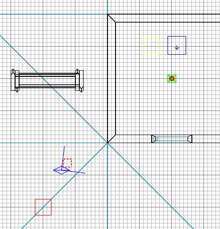
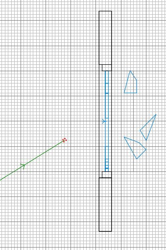
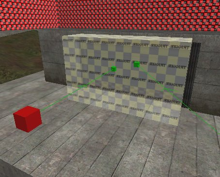

|
We've reached the final set of lessons
needed to reach the point where you can
create and distribute a fully operational
PK3.
This lesson covers the use of limbo
cameras, which are the little (dynamic)
images that accompany the objectives text on
the limbo screen. With the views,
those blocks of text, and the tickes
and crosses you can superimpose on them,
this part of the limbo screen tells the
players what to do, the order to do it in
and roughly where to do it.
I'm not actually sure how many players
ever look at this information, whether they
are brand new to the map and could use the
instructions, or whether they are familiar
with the map and need to know which
objectives have been accomplished - but you
have to provide this information or you get
some ugly default views in the limbo camera
section.
The components to providing limbo camera
information are:
- the limbo cameras placed in the map
- the script which associates each
camera to an objective
- the script which dynamically puts
ticks and crosses on the objective text
- the descriptive text which accompanies
the views
We'll start with the camera placement.
Run Radiant and open the map.
 You
are limited to 8 objectives. Along with the general introduction limbo
camera view, this gives you a total of 9 limbo cameras available to you. You
are limited to 8 objectives. Along with the general introduction limbo
camera view, this gives you a total of 9 limbo cameras available to you.
|
We will place 2 cameras and assume there
is one objective - for the allies to destroy
the main gate.
The first camera will show the general
view which introduces the map. In the
3D view, place the view where you want the
camera to be looking from, and aim the view
in the direction you want it to be looking
in.
In the 2D view, position the overhead
view so you can see the little blue eyeball
indicator. I've picked a general view,
just above the roof height, that offers a
far view of the gate.
Right-click just in front of the eyeball
and select info/info_limbo_camera.

Now in the 2D view, adjust the height of
the camera until it is just in front of the
view in 3D.
Press N.
Enter objective and give it a
value of 0.
Enter target and a value of limbo0.
Press ESC.
We must now place an indicator over in
front of the gate to tell the camera what to
look at.
Right-click in front of the gate and
select info/info_notnull.
In the side view, move the info_notnull
to a height about the middle of the gate.
Press N.
Enter targetname with a value of limbo0.
If you have done this correctly, the
camera will now join to the info_notnull
with a green line.

Press ESC.
Now we'll place the second camera - it
will show a close-up view of the objective,
ie the gate. Get a close view in 3D
and place and position another limbo camera
entity as you did before.
Press N.
Enter objective and give it a
value of 1. This is the first
of a possible 8 objectives.
Enter target and a value of limbo1.
Press ESC.
Place another info_notnull in front of
the gate.
Press N.
Enter targetname with a value of limbo1.
If you have done this correctly, the
camera will now join to the info_notnull
with a green line.

Save and compile the map. Don't run
ET yet.
Remember that these are dynamic cameras,
and will show the view at the moment the
player is looking at it. Bear that in
mind if your view looks wrong or
inappropriate if the game circumstances
change. Don't worry too much though,
as I said, I doubt many people look at them
:(
|